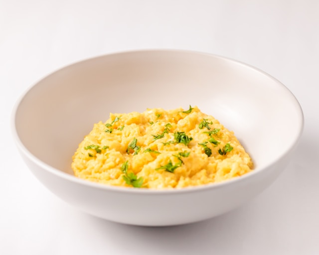

Scrambled Eggs

Description
This recipes shows how you can prepare restaurant quality scrambled eggs from the comfort of your home. All you
need is a non-stick pan, a few simple (but high quality) ingredients; and a burning passion for cooking, along
with intense focus, and a good amount of patience.
I learned this recipe because I was tired of eating dried scrambled eggs that looked more at home in a fried rice
dish, rather than something that'd go well with a fresh piece of toast. What we're aiming for here instead is
buttery, silky and melt-in-your mouth scrambled eggs. The full credit for this recipe and the techniques used to
make it goes to Gordan Ramsey, whose viral YouTube video on the subject made it possible for me to make such
amazing scrambled eggs.
And after you follow this recipe, you can too. Let's get started, shall we?
Ingredients
- Eggs - x2
- Salt - 1/2 tsp
- Milk - 1 tbsp
- Butter - 1 tbsp
- Vegetable Oil - 1 tbsp
- Ginger/Garlic Paste - 1/4 tsp (Optional)
- Ground Black Pepper (For garnishing)
Steps
- Crack x2 eggs into a large bowl.
- Put 1 tbsp milk, 1/2 tsp salt, and 1/4 tsp ginger/garlic
paste(optional) in the same bowl.
- Whisk all ingredients thoroughly.
- Take a cold non-stick fry-pan, and put it on low heat.
- Immediately add in 1 tbsp oil.
- Before the oil gets too hot, pour in your eggs into the fry-pan.
- Start whisking immediately with a spatula.
- If the eggs start to stick at the bottom, remove the fry-pan from the heat and continue whisking until the
eggs are fully incorporated.
- Once the eggs are uniformely mixed, put it on the fry-pan again to continue cooking. Keep whisking
throughout this process.
- Repeat steps 8-9 until the eggs reach your desired consistency.
- Just before they're finished cooking, take your fry-pan off the heat and add in 1 tbsp
butter and whisk one last time until fully mixed. This also stops the carry-over
cooking.
- Put your scrambled eggs into a plate, and garish with black pepper.
- Serve with a piece of toast, or a homemade whole-wheat paratha, along with a cup of chai.